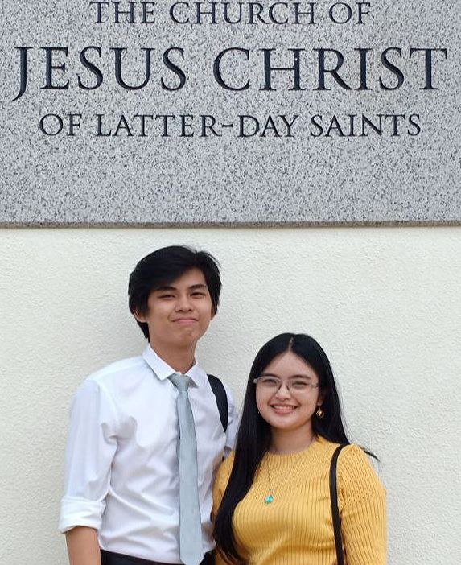

Julllian Krysten V. Lim | WDD 130
Hi, I'm Jullian! I recently graduated from the Pathway Connect program and have been pursuing a degree in Business Administration, majoring in corporation at Ateneo University. My passion for learning and growth has led me to an exciting new chapter in my life, as I'm now studying Software Development online at BYU-Idaho.
I've always been interested in the business side of things, especially e-commerce and real estate. These interests have inspired me to become a web developer and, eventually, a cybersecurity professional. The decision to learn programming is a natural progression for me, as it will allow me to merge my business acumen with cutting-edge technical skills.
I chose to pursue my studies in programming at BYU-Idaho because I was amazed by the organization and structure of their Pathway program. It has truly helped me develop skills I never thought possible, and I believe their Bachelor of Applied Science in Software Development program will continue to push me towards greater success. As I embark on this exciting journey, I look forward to the countless opportunities awaiting me in both business administration and software development.